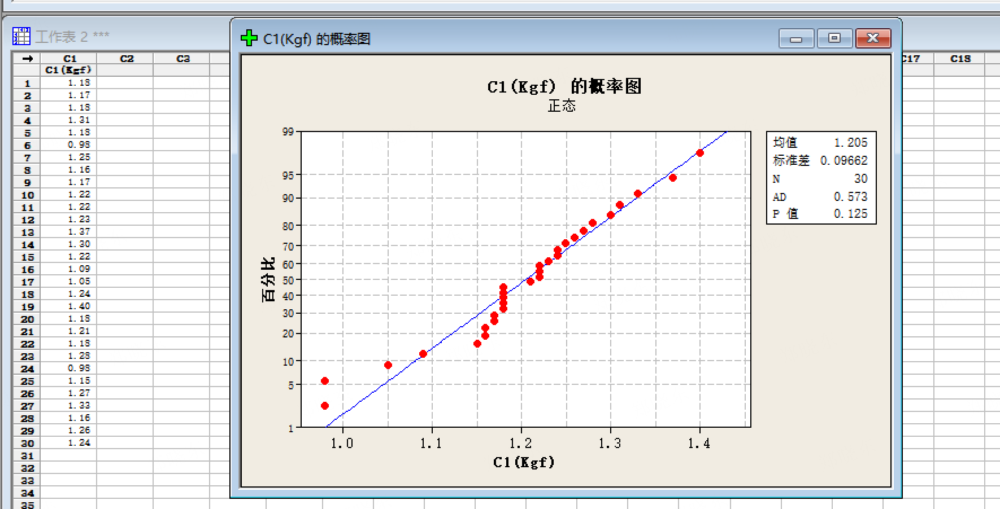
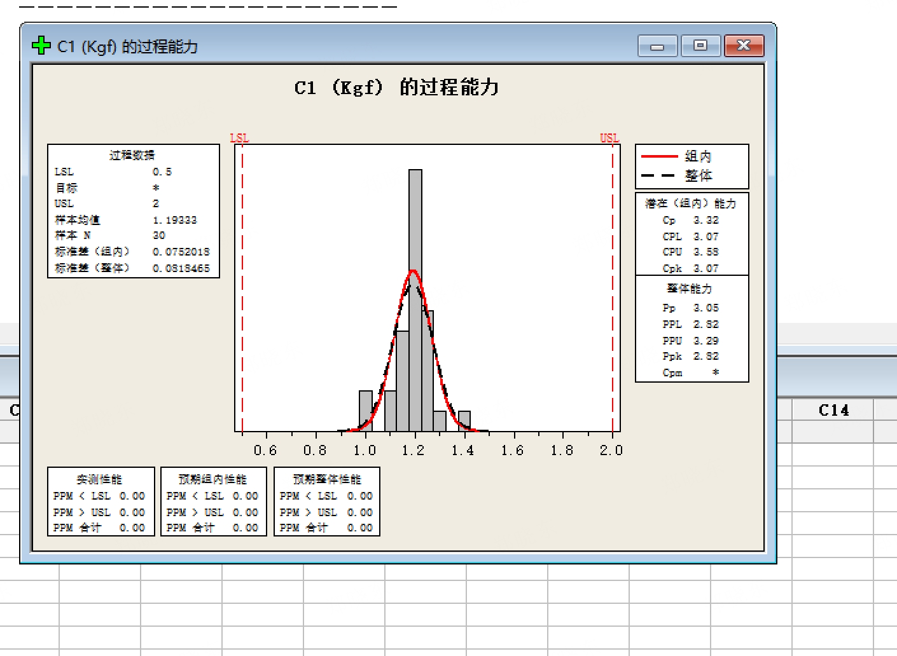

💡 今日知识点：Cpk=1.33 的由来
核心概念：Cpk 是什么？
Cpk = "允许的波动" ÷ "实际的波动"
它衡量两个东西：① 过程均值偏离规格中心多远 ② 过程波动有多大
为什么是 1.33？
核心问题：为什么选 1.33，而不是 1.0 或 1.5？
答案：1.33 = 4/3 = 8σ 6σ
推导过程：
① 确定目标质量水平
• 我们希望不合格品率 < 100 PPM（百万分之 100）
• 查正态分布表：±4σ 覆盖 99.994%，不合格率约 63 PPM ✓
② 计算规格带宽
• 规格带宽 = ±4σ × 2 = 8σ
③ 计算 Cpk
• Cpk = 规格带宽 ÷ 6σ = 8σ ÷ 6σ = 4/3 ≈ 1.33
为什么不是 1.0？
• Cpk=1.0 → 规格带宽 = 6σ（±3σ）
• 如果均值偏移 1.5σ，只剩 1.5σ 余量
• 不合格率 ≈ 6.7%（67000 PPM）❌ 太高了
为什么不是 1.5？
• Cpk=1.5 → 规格带宽 = 9σ（±4.5σ）
• 质量更好，但成本更高
• 对于一般制造业，1.33 是性价比最好的选择
一句话总结：
1.33 = 4/3，来自"规格带宽 8σ ÷ 过程波动 6σ"，保证即使均值偏移 1.5σ，不合格率仍控制在 63 PPM 以内。这是制造业通用的"最低合格门槛"。
σ 是什么？
σ（读作"sigma"，希腊字母）= 标准差，衡量数据波动大小。
• σ 越小 → 数据越集中 → 过程越稳定
• σ 越大 → 数据越分散 → 过程波动大
在 Cpk 公式中：
• 3σ = 过程的实际波动范围（单侧）
• 6σ = 过程的总波动范围（双侧）
• Cpk = 规格带宽 ÷ 6σ = (USL-LSL) ÷ 6σ
所以 Cpk=1.33 意味着：规格带宽 = 4σ × 3 = 12σ ÷ 6σ × 2 = 4σ（单侧）

图：USB 插入力正态概率图（p=0.125 > 0.05，数据服从正态分布）
️ 使用前提：必须先做正态性检验
• 菜单：统计 → 基本统计量 → 正态性检验 → 变量=C1 → 确定
• p ≥ 0.05 → 数据服从正态分布 → 可以用 Cpk
• p < 0.05 → 数据非正态 → 不能直接用 Cpk（需转换或换方法）
🔧 Minitab 操作步骤：
能力分析路径：
统计 → 质量工具 → 能力分析 → 正态 → 选单列 → 变量填 C1 → 子组大小填 1 → 规格下限填具体数值（如 0.5）、规格上限填具体数值（如 2.0）→ 确定
结果判读（三层检查）：
第一层：Cpk 值 ≥ 1.33 → 合格
第二层：直方图上红线（规格限）有没有被碰到的趋势
第三层："整体预期不合格品率"应该 < 63 PPM
额外检查：Cpk 和 Ppk 差距大 → 说明批次间波动大，需追查原因
Cpk 与不合格率对应关系：
• Cpk=1.0 → 规格带宽 = 6σ（±3σ）→ 不合格率约 0.27%（2700 PPM）
• Cpk=1.33 → 规格带宽 = 8σ（±4σ）→ 约 0.006%（63 PPM）✓ 合格线
• Cpk=1.67 → 规格带宽 = 10σ（±5σ）→ 约 0.6 PPM（优秀）
• Cpk=2.0 → 规格带宽 = 12σ（±6σ）→ 约 0.002 PPM（六西格玛水平）
📱 传音场景：USB 插入力
案例数据：
• 规格：0.5~2.0 Kgf（LSL=0.5, USL=2.0）
• 实测：均值 1.1933，标准差（组内）0.0752
• 计算：Cpk = min((2.0-1.1933)/(3×0.0752), (1.1933-0.5)/(3×0.0752)) = min(3.57, 3.07) = 3.07
• 结论：3.07 > 1.33 → 过程能力充足 ✓
📐 规格限是怎么定义的？
LSL/USL 的具体数字不是统计出来的，是产品设计或客户要求决定的硬边界。
USB 插入力 0.5~2.0 Kgf 的来源：
• LSL = 0.5 Kgf（下限）：插太松会接触不良
• USL = 2.0 Kgf（上限）：插太紧会损坏接口
这两个值来自：① 结构设计规范（结构工程师根据 USB 接口的物理特性定义）② 客户 Spec（如果客户有特殊要求）③ 企业标准（传音的 QM-ST-STP-R-002 V2.8 第 5.3.24 条款）
关键原则：规格限是固定的，工程师不能随意改动。Cpk 不够 → 说明制程有问题，需要改进制程，而不是改规格。
简单说：规格限是"产品能不能用"的物理边界，Cpk 是"制程稳不稳"的统计指标。两者不能混为一谈。

图：USB 插入力能力分析结果（Cpk=3.07，过程能力充足）
| C1 (Kgf) |
|---|
| 1.18 |
| 1.17 |
| 1.18 |
| 1.21 |
| 1.19 |
| 0.98 |
| 1.25 |
| 1.16 |
| 1.17 |
| 1.22 |
| 1.22 |
| 1.22 |
| 1.27 |
| 1.20 |
| 1.22 |
| 1.09 |
| 1.08 |
| 1.24 |
| 1.40 |
| 1.18 |
| 1.21 |
| 1.19 |
| 1.28 |
| 0.99 |
| 1.15 |
| 1.27 |
| 1.22 |
| 1.16 |
| 1.26 |
| 1.24 |
⚠️ 样本量要求：
• Cpk 分析建议 25~30 个数据点
• 样本太少 → 标准误大 → 结论不可靠
• 不够时的补救：跨批次合并（同项目/同结构/同供应商）
⚠️ 避坑：注意偏移方向
如果均值明显偏向规格下限（如 μ=0.6，LSL=0.5），即使 Cpk≥1.33，也要警惕——制程中心偏了。
Cpk 只反映"最近的那一侧"够不够远，均值偏移可能让另一侧处于危险边缘。
📐 单边规格怎么处理？
有些测试只有单侧规格限：
• BTB 拉拔力：只有下限（≥5N）→ 规格下限填 5，规格上限留空
• 三杆弯曲：只有上限（≤1mm）→ 规格上限填 1，规格下限留空
在 Minitab 能力分析对话框中，只填一个规格限即可，另一个留空。
🗣️ 人话版总结：
Cpk 就是看"你的过程稳不稳、偏不偏"。
≥1.33 = 稳且偏得少 = 合格；<1.0 = 波动太大或偏了 = 要改。
同时看 Cpk 和 Ppk：差太多说明批次之间不一致，要查来料或设备变化。